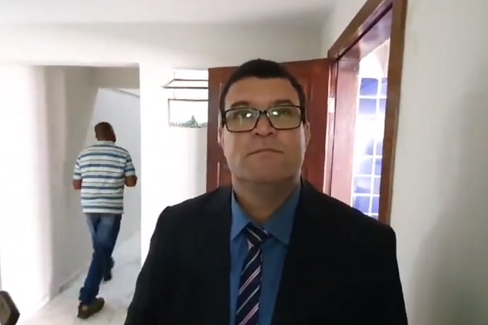

VOLTAR
GOVERNO
SOBRE A CIDADE
COMENTARIOS
NOTICIAS
União Brasil nomeia 'Rey de Domingão' como líder do partido na Câmara de Brumado

Presidente da Apae cai do 3º andar de prédio e é transferido para Hospital de Conquista
Prazo para solicitar segunda via do título de eleitor termina nesta quinta-feira (22)
Bahia: Professor de boxe é morto a tiros enquanto dava aula na própria academia
Polícia Militar de Vitória da Conquista recupera imagens furtadas de igreja na zona rural de Brumado